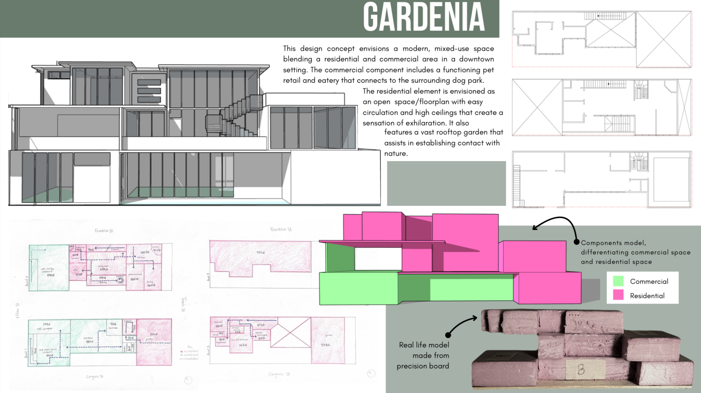

Project Gardenia: Downtown Mixed-Use Concept
Field: Architecture & Design | Status: Completed May 2025
A modern design blending city living with community spaces on Frankie St & Foceisn St.
Key Contributions & Scope
- Team Lead & Field Survey: Led our team on-site to measure property lines, survey lot conditions, and lead the final project presentation.
- Dog Park & Pet Eatery: Designed a commercial retail store and pet-friendly eatery that connects directly to the neighboring dog park.
- Open Residential Living: Created an open-concept home layout with high ceilings for airy circulation, plus a large rooftop garden to stay connected with nature.
- Physical & Color-Coded Models: Built a 3D block model to separate retail and living spaces, alongside a scale model hand-crafted from precision board.
Tools & Techniques Used
AutoCAD, Revit, Site Measuring, Scale Modeling, Urban Design
Project Board Presentation
